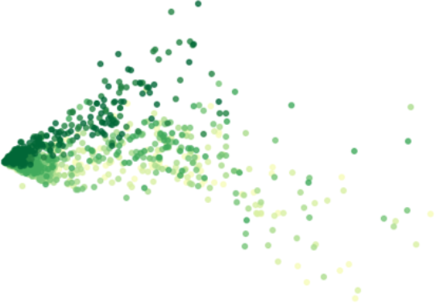

Advanced Data Visualization

Table of Contents

Introduction
Welcome to the tutorial for the AI Starter Kit on advanced visualisation. We will introduce you to a number of more advanced visualisation techniques. You will learn how these can be used creatively to uncover more elaborate insights from your data than would be possible with the more general out-of-the-box visualisations and plots.
Data visualisation is an important activity in several phases of a data science project. It allows you to understand several characteristics of a dataset, to discover interesting insights, to validate analysis results, to communicate these results to non-experts via intuitive dashboards, and so on. Popular visualisations often used by data scientists are boxplots, distribution plots, as well as bar and line charts. These are basic out-of-the-box visualisations that are generally applicable, but that are often hard to interpret for non-experts. And more importantly, they do not always reveal interesting insights. More advanced visualisations exploit the human eye’s extraordinary visual pattern recognition abilities. A clever visualisation of data can already reveal interesting patterns and insights, even before any complex algorithm is applied. On top of that, they can help in formulating hypotheses to be validated further in the data analytics process or to identify features that can be useful for data-driven modelling.
Before we dive deeper in these more advanced visualisation techniques, let us discuss some examples. many time series show some underlying periodicity or seasonality. Depending on the length and granularity of these time series, these seasonal effects are often only hardly visible. In this Starter Kit, we will introduce to you to a number of visualisations that make it very easy to identify for example monthly patterns. Another field where advanced visualisations can help is anomaly detection. Such anomalies appear for example when a machine is failing, and are especially hard to detect when it comes to multi-dimensional data originating from multiple sensors.
In this Starter Kit, we will use advanced visualisations such as timeline plots, heatmaps, calendar maps, area plots and scatter plots to visually explore a dataset and gradually build up more knowledge about it. We use a publicly-available dataset that consists of bike counter data, which contains hourly information on the number of bikes that cross at six different spots in Seattle. By visualising this data, we will be able to:
- explain certain characteristics of the data, such as some nodes having more crossings than others,
- identify global trends, such as an increase in traffic over the years, and seasonal trends, such as fluctuating popularity within a year,
- recognize structural patterns, such as distinct weekday and weekend traffic patterns, and finally
- detect outliers, such as weekend traffic patterns that occur on weekdays.
In the next video, we will explain the data in more detail before we continue in the following videos with a number of more advanced visualisation techniques to extract insights from this data.
Data Understanding and Preprocessing
Welcome to the second video of the tutorial for the AI Starter Kit on advanced visualisation. In this video, we will give an overview of the dataset that we will use in this Starter Kit.
The data we use is publicly-available data from the City of Seattle. The dataset contains information about bike rides at specific places in the city. At each spot, the number of bikes going in each direction per hour is counted.
In the table, you see a random sample of the data. The variable ‘Node’ refers to the single locations at which the bikes are counted, which is done in two directions. In a first step, we will add some additional variables to the table that will help us later on for the visualisations. From the timestamp column, we extract the date and time, respectively, the hour and the day of the week.

Additionally, we replace all possible missing measurements, hence where the variable ‘Total’ is not set, with zeros.
Now, we can extract some basic statistics from the data.

For all locations, we have data for at least three and a half years. For one of the locations, Fremont Bridge, the data spans even over 6 years. We can also see that Spokane Street seems to be very popular with more than 1 million bike crossings in 4 and a half years while others only reach about 300.000 counts in the same time span.

Before we start with the advanced visualisations, let’s briefly check the location of the single nodes on the map. This allows us to verify whether they are close to important areas, like for example tourist or business areas, points-of-interest, etc. In our interactive Starter Kit, you can click on the red circles to see where the single nodes are located. Can you guess which marker is Spokane Street?
Spokane Street is on clear bottleneck in Seattle’s road network. It is one of the few points at which it is possible to cross from the city center to West Seattle, whereas people can choose many different roads in other areas of the city. Similarly, Fremont Bridge connects Queen Anne and Fremont which are also divided by a canal. In addition, NorthWest 58th Street, 39th Avenue and 26th Avenue are located furthest from the city center, which might explain why they see much less traffic.
With this first simple visualisation, we can already explain some characteristics of the data. In the next video, we will concentrate on the temporal evolution and seasonal patterns of the data at the different locations.
Temporal and Seasonal Visualisations
Welcome to the third video of of the tutorial for the AI Starter Kit on advanced visualisation. In this video, we will concentrate on how to visualize time series data in the best way in order to underline seasonal effects. For this, we will introduce different kinds of visualisations and explain what are their strengths and weaknesses.
Since we are dealing with time series data, we can first use a timeline visualisation and plot the average number of crossings per hour and node over time. Such visualisations are on the one hand useful to observe abrupt changes in the data but on the other hand, also to identify time-sensitive trends, such as seasonal variation, increasing or decreasing trends, etc. Further, they make it easy to recognize periods with missing data.
The visualisation on the right just plots the total number of crossings per hour for each node. However, plotting the available data in this way results in a visualisation containing an excessive amount of information. Note for example that data of some nodes hides data of other nodes, a phenomenon called occlusion. The massive amount of information makes it difficult to identify interesting observations in the data such as possible seasonal patterns.
In order to resolve this issue, it is possible to resample the data to a lower frequency like for example daily or weekly crossings. In the interactive Starter Kit, this can easily be done by changing the resampling rate in the corresponding dropdown box.
The seasonal pattern is very clear when using monthly resampling, while it is not as clear when using daily and yearly resampling. For the former, the day-to-day variation makes it harder to see the average trend, while for the latter the seasonal patterns occur over a shorter time period than the time window we use for resampling.
Using a monthly resampling we can verify some of our former assumptions: first of all, Fremont Bridge clearly is the most popular node. A seasonal pattern is clearly visible for Fremont Bridge, Spokane St, and 2nd Ave, where crossings seem to increase in summer and decrease in winter. Such a seasonal pattern might also be present for other, less popular nodes. Large differences in the number of crossings per hour and therewith the overall scale, make it hard to identify patterns for these lesser frequented nodes. We can make the data comparable across nodes by normalising it, that is by changing its numerical values in such a way that a common scale is used without distorting differences in ranges and without losing information.
In the interactive Starter Kit, you can choose between two different types of scaling. You can either apply standard scaling - also called Z-score normalisation or standardisation - in which numerical variables are rescaled to have the properties of a standard normal distribution with zero mean and unit variance. Alternatively, you can choose to apply a Min-max normalisation, in which the data points are rescaled such that the minimum and maximum value correspond to 0 and 1, respectively. Both types of scaling methods have their advantages and disadvantages. The discussion on this lies beyond the scope of this Starter Kit. For the Min-max normalisation, all values are mapped in the range from 0 to 1 which makes it easy to compare the overall pattern of the single time series. We can see for our data that most of the crossings reach their corresponding maximal values in the summers of 2014 and 2018. One extreme outlier in this regard is the crossing at 26th Avenue.
It was mainly frequented in the summer of 2014 but for the remaining years the values were much lower. As these extreme values are mapped to 1, it is hard to identify any pattern for the years after 2014. With the standard scaling, this problem still occurs as in this case the standard deviation dominates the maximal values. On the other hand, it makes it easier to compare the underlying distribution of the data. We observe that the distributions of most of the streets are very similar. This gives us a hint that the overall behaviour at the single nodes is similar with respect to the seasonal pattern. Note, that a standard scaling only makes sense for data with an underlying Gaussian distribution.
An alternative to timeline plots is a heatmap plot. A heatmap is a visual representation of data that uses different colours to indicate varying intensities of values. It is useful to visualise large amounts of data and also, to reveal spatial or temporal patterns that are much harder to spot in numerical data.
Many different types of heatmaps exist, like for example matrix heatmaps, calendar heatmaps, geographical heatmaps, or circular heatmaps.
In this tutorial, we will start with a calendar heatmap to visualise time series data on a calendar view. The visualisation consists of a series of matrix heatmaps, that is, heatmaps where data is presented in a matrix-like form. In the case of our data, each year is plotted on a different heatmap row, starting from 2012 at the top and finishing with 2018 at the bottom. The columns in each individual heatmap row correspond to individual weeks within a year. The columns are in turn vertically divided in 7 rows, each corresponding to a different day of the week such that each square corresponds to a single day. The colour intensity of each square represents the total number of crossings for that day, which in this case are aggregated per day across all nodes.
This type of visualisation provides several interesting insights: as the timeline visualisations already revealed, it confirms that bike traffic seems to follow a seasonal pattern. This easily becomes visible as the winter period, November to May, has lighter colours each year than the summer period, from May to November. Further, we see, that the last two weeks of the year are always less crowded, which is probably due to the holiday season. Regardless of the specific year and season, weekdays always see more cyclists than weekend days. This becomes visible as the last two rows in each matrix heatmap are always lighter than the top rows.
On the basis of this visualisation, we would also like to discuss the importance of colormaps. In most data science projects, the colormap gets the least attention. But for this example, we can see that not all colormaps work equally well. For example, using a circular colormap like hsv does not intuitively indicate days with low and high numbers of crossings as the map starts and ends with red-like colors. RdBu does a better job in this respect, but it does have another issue. This is a so-called diverging colormap, which has a naturally implied zero-point. This type of colormaps works very well for data with positive and negative entries. In our case though, no natural zero-point in the middle is given such that with this colormap blue days have higher values and red days have lower values.
Sequential color maps that continuously change from one color to another like YlGn work much better for this kind of data. Keep in mind though, that we all might associate different colours with different values. For this, let’s have a look at a continuously changing colormap from red to green. Most people will begin to wonder when they first see the plot. We usually associate red with bad, dangerous or under-performing datapoints while green implies the opposite. This is not the case here though. On top of that, this type of colormap might also give problems to people with red–green color blindness. To summarize, in this particular example, changing from a less intense, lighter colour for low values to a darker, more intense colour for high values, grants the best interpretability.
Similarly to the calendar heatmap over the full year, we can drill down further and look at whether we can observe some hourly patterns. Let’s first investigate a single node, for example Fremont Bridge, and use a matrix heatmap in which each day of the week is represented as a row and each hour of the day is represented as a column. As before, the colour intensity indicates the amount of traffic for that day and hour. Note that such a heatmap requires summing the total traffic for each day per hour.

This plot reveals the following insights: first of all, it confirms the different daily patterns for weekdays and weekends. For this, please have a look at the last two rows of the plot representing Saturdays and Sundays. They are quite different from the top 5 rows representing Monday to Friday. There is a clear bimodal pattern for weekdays, with heavier traffic in the morning and evening. This is not visible for weekend days but rather some increase in the midday hours. This bipolar pattern probably relates to people using their bikes to get to work and back home. This is in contrast to the weekend pattern, corresponding to recreational traffic, that is people biking for pleasure in their free time.

In order to check whether we can see this commute pattern for all nodes, we can use the small multiples technique. A small multiple is a series of graphs of the same type, using the same scale, presented together at a small size with minimal details.
The graphs in this view show different partitions of the same dataset, which makes it very easy to compare these to each other. We plot small multiples for the matrix heatmap, using the different nodes to partition the data. Keep in mind that you should not compare the brightness of the colours between different graphs, as we did not normalise the data beforehand.
We can distinguish the commute pattern that we discovered previously, - though with different gradations – in all nodes except for the node on 58th Street. On that node, the graph depicts a different pattern, with a significantly higher number of bikes in the weekend around noon in comparison to weekdays, maybe due to local habits or comparably lower commuting on weekdays.
We can investigate the commute pattern even further by taking the direction of the cyclists into consideration. For this, we will use a variant of an area plot - called a streamgraph – in which data is displayed around a central axis. In the present case, we will display the average number of crossings per hour at a node around the X axis, in order to discriminate traffic between the two directions. We will plot one direction above the X axis and the other direction below. The X axis itself will represent the time expressed as hours in a day.

The plot presents streamgraph plots using the small multiples technique for the different days of the week. In the interactive Starter Kit, it is possible to select the different nodes, as well as to select the month for which to show the data.
This plot clearly confirms that the pattern we observed is a real commute pattern for all nodes - except for NorthWest 58th Street. During the week, more cyclists are going through one of the two directions in the morning hours, whereas in the afternoon more cyclists are returning through the other direction. This pattern is absent for weekend days. NorthWest 58th Street does not have a morning and evening peak or a different pattern for weekdays versus the weekend. It looks more like the weekend days of other nodes for every day of the week. Note that this street is far from the city center, which may explain the absence of biking commuters.
For the locations with a bipolar pattern, it is also interesting to investigate the difference between summer and winter. In summer, when the weather is rather good, the peaks in Spokane Street are located at over 150 crossings per hour. On the contrary, when plotting the same graph for winter, the maximal values are at 75 people per hour only. This indicates that still some people commute in winter per bike, but that some change to different means of transportation.
In this video, we have seen how we can explain some of the habits of people of Seattle - and this only by means of smartly chosen visualisations. In the next video, we will show how we can use visualisations for outlier detection.
Outlier Detection
Welcome to the fourth video in the tutorial on advanced visualisation. In this video, we will concentrate on outlier detection. In particular, at which days does the people’s biking behaviour deviate from the expected one.
The visualisations presented in the former videos already allowed us to identify outliers. We saw for example that the traffic at NorthWest 58th Street seems to follow other rules than the other nodes in the network. In this video, we will perform a more detailed analysis of outliers in order to identify them more precisely.
This table presents another way of looking at the data. For each node we have 24 observations per day, corresponding to the hourly total number of bike passings through that node. As humans, we cannot easily interpret such a table by just staring at it. However, it is also difficult to visualise such data because it is multi-dimensional meaning that it has 24 values for 6 nodes for thousands of days.
However, we can still visualise that data by first performing a so-called dimensionality reduction technique. One of these techniques is Principal Components Analysis or PCA. The idea behind PCA is to find a reduced set of axes that summarize the data.
More concretely, PCA is a statistical procedure that transforms the multidimensional data provided as input into a reduced set of orthogonal - and with that uncorrelated - dimensions. These dimensions are called principal components. By using PCA, we can reduce the dimensionality of the data in the above table to two dimensions and plot the result using a scatterplot, as shown here.

Scatterplots typically visualise two variables of a dataset along the X and Y axis, respectively. Additional information can also be visualised by changing the colour or size of the dots though. Scatterplots are useful to identify relationships between two variables, such as correlation, and to identify separate groups in the data which can be useful for subsequent clustering. The scatterplot shown here has the shape of an ‘L’ and seems thus to indicate that there are roughly two groups in the data, corresponding to the two line segments forming the shape of that letter.

We can now check in the interactive Starter Kit whether these two groups are present for all nodes. From the above analyses, we might suspect different results for NorthWest 58th Street and 26th Avenue compared to the other nodes.
Furthermore, the Starter Kit also offers the possibility to change the colormap indicating the day of the week. What kind of colormap would you use to visualise the different days of the week?
Also here, some colorscales work better than others. One the one hand, we could use sequential (YlGn) or diverging (RdBu) colormaps. When applying these to the data, it is hard to distinguish the data from the different days.
These colormaps work better for continuous data, such as the heatmaps that we showed in the previous video. For categorical data as in this figure, a qualitative colormap, like colorblind, works much better. As the name suggests, this colormap has the added advantage that it is very readable for people with varying form of colorblindness.
When using the colorblind colormap for Fremont Bridge, we can clearly see the L-shape. On top of that, we see that the two arms mainly belong to either weekdays or weekends. The dots corresponding to Fridays seem to be closer to the weekend pattern though.
When we select the data from NorthWest 58th Street, we get a significantly different picture. The two groups are not as clearly separated as before, but Saturdays and Sundays typically correspond to points higher in the figure.
Getting back to Fremont Bridge, also here a couple of weekdays seem to behave like weekend days. We can observe some of these dots in the upper left part of the plot for all nodes. We suspect these latter dots to be outliers. We can automatically identify them by first applying a clustering algorithm for grouping the datapoints in both of the arms together. Then, we can check that the points in each of these two categories correspond to weekend days or weekdays, respectively. Those which do not follow this pattern can be considered outliers. To cluster and hence separate these points we use a Gaussian Mixture Model. It is a clustering technique particularly suited to oval-like shapes like those corresponding to the two categories we would like to separate. As training data, we only consider a single node at a time, but in general, the model can be trained on the data for all the nodes that exhibit the commute pattern. We only do this for those nodes where the two distinct groups could be identified, so not for NW 58th Street and 26th Avenue.
As can be seen from the plot, the Gaussian mixture model is quite good in separating the two groups. With the colours indicating the cluster, we can easily identify the outliers, that is those days that are actually weekdays but that are assigned to the weekend day cluster.
The heatmap plot shows the date corresponding to those outliers. By further checking the US federal holiday calendar, we can see whether the resulting dates corresponded to a holiday, in which case the name of the holiday is indicated on the Y axis.
We can see that all outliers can be explained: either they are weekdays that are actually holidays or weekdays that are other special days, for example the Friday after Thanksgiving, the days before and after Christmas, and New Year’s Eve. Note that not all holidays are identified as outliers, for example Thanksgiving should occur every fourth Thursday of November, but we did not identify it as an outlier in 2016, 2017 and 2018. This might be due to an inaccuracy of the model, which would require a more elaborate preprocessing of the data in order to resolve this, yet this is out of scope of this Starter Kit.
Key Take Away Messages
In this Starter Kit we have demonstrated how creative visualisations can already reveal interesting patterns and more elaborate insights in your data, even before any complex algorithm is applied. In particular, we have used bike counter data to illustrate how timeline plots, different types of heatmaps, streamgraph plots and scatterplots can be used bringing various kinds of insights to the surface. We showed how such visualisations could not only be used to explain certain characteristics of the data, such as some nodes having more crossings than others, but also to identify global trends, such as an increase in traffic over the years, and seasonal trends, such as fluctuating popularity within a year. Furthermore, we were able to recognize structural patterns, such as distinct weekday and weekend traffic patterns and by that detect outliers, such as weekend traffic patterns that occur on weekdays. Additionally, we discussed how the selection of colormaps can influence the visibility of given effects.
These insights can help in formulating hypotheses to be validated further or can be used in subsequent analysis steps, such as feature engineering and data-driven modelling.
We thank you for completing this video series and hope to welcome you in another AI Starter Kit tutorial.